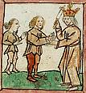

|
|
|
1 Chronicles 19
|
|
| 19:1
Now it came to pass after this, that Nahash the king of the children of
Ammon died, and his son reigned in his stead. |
|
| 19:2
And David said, I will shew kindness unto Hanun the son of Nahash, because
his father shewed kindness to me. And David sent messengers to comfort him
concerning his father. So the servants of David came into the land of the
children of Ammon to Hanun, to comfort him. |
|
| 19:3
But the princes of the children of Ammon said to Hanun, Thinkest thou that
David doth honour thy father, that he hath sent comforters unto thee? are
not his servants come unto thee for to search, and to overthrow, and to spy
out the land? |
|
| 19:4
Wherefore Hanun took
David's servants, and shaved them, and cut off their garments in the midst
hard by their buttocks, and sent them away. |
 (19:4)
(19:4)
"Hanun took David's servants, and shaved them, and cut off their
garments in the midst hard by their buttocks."
David's messengers had their buttocks exposed.
David's messengers mistreated
(Unknown, 1450-1500)
|
| 19:5
Then there went certain, and told David how the men were served. And he
sent to meet them: for the men were greatly ashamed. And the king said,
Tarry at Jericho until your beards be grown, and then return.
|
| 19:6
And when the children of Ammon saw that they had made themselves odious to
David, Hanun and the children of Ammon sent a thousand talents of silver to
hire them chariots and horsemen out of Mesopotamia, and out of Syriamaachah,
and out of Zobah.
|
| 19:7
So they hired thirty and two thousand chariots, and the king of Maachah
and his people; who came and pitched before Medeba. And the children of
Ammon gathered themselves together from their cities, and came to battle. |
|
| 19:8
And when David heard of it, he sent Joab, and all the host of the mighty
men. |
|
| 19:9
And the children of Ammon came out, and put the battle in array before the
gate of the city: and the kings that were come were by themselves in the
field. |
|
| 19:10
Now when Joab saw that the battle was set against him before and behind,
he chose out of all the choice of Israel, and put them in array against the
Syrians. |
|
| 19:11
And the rest of the people he delivered unto the hand of Abishai his
brother, and they set themselves in array against the children of Ammon. |
|
| 19:12
And he said, If the Syrians be too strong for me, then thou shalt help me:
but if the children of Ammon be too strong for thee, then I will help thee. |
|
| 19:13
Be of good courage, and let us behave ourselves valiantly for our people,
and for the cities of our God: and let the LORD do that which is good in his
sight. |
|
| 19:14
So Joab and the people that were with him drew nigh before the Syrians
unto the battle; and they fled before him. |
|
| 19:15
And when the children of Ammon saw that the Syrians were fled, they
likewise fled before Abishai his brother, and entered into the city. Then
Joab came to Jerusalem. |
|
| 19:16
And when the Syrians saw that they were put to the worse before Israel,
they sent messengers, and drew forth the Syrians that were beyond the river:
and Shophach the captain of the host of Hadarezer went before them. |
|
| 19:17
And it was told David; and he gathered all Israel, and passed over Jordan,
and came upon them, and set the battle in array against them. So when David
had put the battle in array against the Syrians, they fought with him. |
|
| 19:18
But the Syrians fled before Israel; and David slew of the Syrians
seven thousand men which fought in chariots, and forty thousand footmen, and killed
Shophach the captain of the host. |

 (19:18) "David slew of the Syrians
seven thousand men which fought in chariots, and forty thousand footmen." (19:18) "David slew of the Syrians
seven thousand men which fought in chariots, and forty thousand footmen."
On what must have been a particularly good
day for killing but not so good for counting,
David kills 7000 men in chariots and 40,000 footmen.
How many did David kill?
God's 79th killing
|
| 19:19
And when the servants of Hadarezer saw that they were put to the worse
before Israel, they made peace with David, and became his servants: neither
would the Syrians help the children of Ammon any more.
|
|